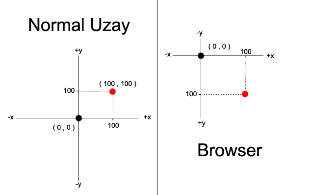

Web Geliştirme Eğitimi Dersleri, 006
2 Ocak 2008, Çarşamba
BOX MODEL
XHTML için kutu model sistemi.

W3C Box Model Şeması
İlgili CSS Komutları
- width:
- max-width:
- min-width:
- height:
- max-height:
- min-height:
- padding:
- padding-top:
- padding-right:
- padding-bottom:
- padding-left:
- margin:
- margin-top:
- margin-right:
- margin-bottom:
- margin-left:
- border:
- border-top:
- border-right:
- border-bottom:
- border-left:
max-width: | min-width:
Yeni bir komuttur. Modern browser’lar içindir. Herzaman olduğu gibi IE6’da çalışmaz. Render’dan sonra, elementin width’i istenilenden büyük yada küçük çıkarsa burada yazan değerler devreye girer.
max-height: | min-height:
Yeni bir komuttur. Modern browser’lar içindir. Herzaman olduğu gibi IE6’da çalışmaz. Render’dan sonra, elementin height’ı istenilenden büyük yada küçük çıkarsa burada yazan değerler devreye girer.
- div#box
- {
- max-width: 300px;
- max-height: 400px;
- }
- /* Ne olursa olsun width 300px’i, height da 400px’i geçemez! */
- /* Scroll-Bar durumu elementin overflow:’una bağlıdır. */
Sizin istediğiniz, id’si box olan element’in ( muhtemelen bu bir div ) genişliği 300px’li geçmesin. Yada yükseklik en fazla 400px olsun. asp yada php gibi dinamik programlama dilleri ile çalışırken bu özellik çok işe yarar.
Düşününki veritabanı’ndan 30 kayıt çektiniz ve bir div için alt alta ( p içinde ) basıyorsunuz. Gelen kayıtta yazan text’in ekranda ne kadarlık bir genişlik / yükseklik kaplayacağını kestiremezseniz bunu css ile fixlemek için max-width: / max-height: kullanabilirsiniz.
border:
Shorthand kullanımdır. Aldığı parametreler ; border-width:, border-style: ve border-color: ’dır.
border-width:
Ölçü sistemindeki değerlerden alır. ( px , em , cm ... ) Ekstra olarak : thin | medium | thick şeklinde, browser’a bağlı kalınlıklarda border da olabilir. Bu çok tercih edilen bir metod değildir.
Bu tarz kullanımda tüm border’lara değer atanmış olur. border-width: 5px; dendiğinde top, right, bottom, left border’ların hepsinin width’i 5px olur.
border-style:
Parametreleri : none | hidden | dotted | dashed | solid | double | groove | ridge | inset | outset şeklindedir.
Border tanımlamalarında genelde solid kullanılır. IE7 ve diğer modern browser’larda dotted ve dashed sağlıklı çalışırken, IE6’da dotted özelliği dashed olarak çalışır.
Bu tarz kullanımda tüm border’lara değer atanmış olur. border-style: solid; dendiğinde top, right, bottom, left border’ların hepsinin stil’i solid olur.
border-color:
Renk sistemindeki değerleri alır.
Bu tarz kullanımda tüm border’lara değer atanmış olur. border-color: red; dendiğinde top, right, bottom, left border’ların hepsinin rengi’i kırmızı olur.
border-top: | border-right: | border-bottom: | border-top:
Her border’a tek tek ulaşmayı sağlar. Shorthand şeklinde çalışır. 3 parametre alır. border-width, border-style ve border-color. Aynen border: gibi çalışır sadece ilgili border’a müdahale eder.
Hesap
- /*
- KUTU_GENİŞLİK = ( width + ( left padding + right padding ) ) + ( left border + right border )
- KUTU_YÜKSEKLİK = ( height + ( top padding + bottom padding ) ) + ( top border + bottom border )
- */
- #box
- {
- width: 300px;
- padding: 10px;
- /* Oluşacak kutu’nun genişliği : 300 + ( 10 + 10 ) = 320px, kutu içinde kalan CONTENT ise width değeri yani 300px olacaktır. */
- }
- #box2
- {
- width: 300px;
- padding: 10px;
- border: 5px;
- /* Oluşacak kutu’nun genişliği : 300 + ( 10 + 10 ) + ( 5 + 5 ) = 330px, kutu içinde kalan CONTENT ise width değeri yani 300px olacaktır. */
- }
Not
*** Marjin bilgisi, box’ın görsel ölçüsünü bozmaz. Sadece içinde bulunduğu elemente göre pozisyon almasını sağlar ( parentNode’una göre ). Herzaman olduğu gibi, IE6’da double margin-bug adında bir hata vardır. Float eden elementler’de olur. margin-right: 20px; dediğinizde IE6 x2 yani sağda 40px marjin bırakır.
Positioning
Görsel yerleşim için kullanılır. Tüm elementler default olarak relative pozisyon’dadırlar. En basit yerleşim elemanı olarak margin: kullanılabilir.
Koordinat Sistemi

Uzay - Bilgisayar Koordinatları
- Bilgisayar ekranının sol üst köşesi 0,0’dır.
- Eksi değerlerle ( 0’dan küçük ) ekranın dışına ( yada görünmeyen ) çıkılabilir!
- body’nin yüksekliğinden yada genişliğinden büyük değerler de ekran dışına çıkabilir!
- position: ve margin: için negatif sayılar ( -100px gibi ) kullanılabilir.